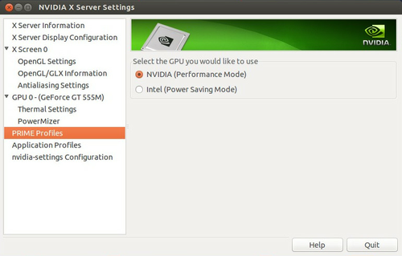

PRIME
Dieser Artikel wurde für die folgenden Ubuntu-Versionen getestet:
Ubuntu 16.04 Xenial Xerus
Ubuntu 14.04 Trusty Tahr
Zum Verständnis dieses Artikels sind folgende Seiten hilfreich:
Dave Airlies "PRIME" bezeichnet die in RandR 1.4, Kernel und X-Stack eingeflossenen Erweiterungen, die es auf Systemen mit mehreren GPUs erlauben auszuwählen, welche GPU die Grafik berechnet und welche GPU die Grafik darstellt. Hierbei schreibt bei Bedarf (grafikintensive Anwendungen auf der leistungsstärkeren GPU) die berechnende GPU in den Bildspeicher der darstellenden GPU. Somit lässt sich bei Notebooks mit Hybridgrafikkarten auch eine GPU nutzen, die nicht direkt mit einem Bildschirm "verdrahtet" ist. Auf Desktopsystemen mit einer in die CPU integrierten GPU und einer zusätzlichen Grafikkarte lassen sich beide GPUs und deren Treiber parallel an einem XServer nutzen.
Aufgrund lizenzrechtlicher Probleme mit der Kernelschnittstelle ließ sich PRIME anfänglich nur mit den freien Grafiktreibern (nouveau, radeon, Intel) nutzen, bis Nvidia eine eigene Schnittstelle in den Kernel implementierte: nvidia-prime. Diese wird genutzt, um ein Zusammenspiel des proprietären Nvidia-Treibers mit dem Intel-Treiber zu ermöglichen.
Verwendung der freien Grafiktreiber¶
Anwendungen auf der Nvidia-/AMD-GPU können durch das Präfix DRI_PRIME=1 gestartet werden. So lautet z.B. der Befehl [1] für das Spiel OpenArena:
DRI_PRIME=1 openarena
Als weiteres Beispiel glxinfo:
DRI_PRIME=1 glxinfo | grep OpenGL
was den freien Treiber zeigen sollte. Beispielausgabe (hier nouveau auf der Nvidia-GPU NVC1):
OpenGL vendor string: nouveau OpenGL renderer string: Gallium 0.4 on NVC1 OpenGL version string: 3.0 Mesa 9.0 OpenGL shading language version string: 1.30
Zum Vergleich den Intel-Treiber auf der integrierten GPU (hier Ironlake M):
glxinfo | grep OpenGL
OpenGL vendor string: Intel Open Source Technology Center OpenGL renderer string: Mesa DRI Intel(R) Ironlake Mobile OpenGL version string: 2.1 Mesa 9.0 OpenGL shading language version string: 1.20
Voraussetzungen¶
Bumblebee mit proprietärem Nvidia-Treiber darf nicht installiert sein.
Sollte eine 3D-Anwendung mit nouveau oder radeon als Provider nur ein schwarzes oder gestörtes Fenster anzeigen, kann es helfen, das Fenster zu vergrößern oder zu verkleinern oder die Anwendung zuerst auf der Intel GPU zu starten, um eine andere Auflösung oder Vollbild zu wählen und diese zu speichern.
Proprietärer Treiber nvidia-prime¶

Zur Zeit ist es nicht wie mit den freien Treibern möglich, den Desktop von der stromsparenden integrierten GPU berechnen zu lassen und nur bei Bedarf anwendungsgesteuert die leistungsstärkere dedizierten GPU zu starten. Allerdings kann man den gesamten Desktop von der dedizierten GPU berechnen lassen, die dann die integrierte zur Darstellung nutzt. Hierbei hat man die bestmögliche Grafikleistung, allerdings sinkt die Akkulaufzeit dementsprechend. Als Einschränkung ist ein Tearing zu erwähnen, was z.B. beim Scrollen, Verschieben von Fenstern und schnellen Ego-Shootern auffallen kann.
Ab Ubuntu 12.04.4 ist sowohl die Nutzung von LightDM als auch von KDM oder GDM möglich. Voreingestellt ist bei Ubuntu (Unity) lediglich LightDM. Architekturbedingt muss beim Einsatz von KDM/GDM im Anmeldebildschirm der Neustart vom X-Server getätigt werden, damit die Umschaltfunktion greift.
Installation¶
Das Paket nvidia-prime wird auf Nvidia_Optimus-Laptops ab Ubuntu 12.04.3 automatisch installiert, wenn man im restricted-driver-manager einen Nvidia-Treiber auswählt und installiert.
Neustart¶
Nach einem Systemneustart greift die Änderung. Der gesamte Desktop wird dann von der Nvidia-GPU gerendert, was der Befehl
glxinfo | grep renderer
zeigt.
Umschalten zwischen den Grafikchips¶
Hinweis:
Der früher erforderliche Einsatz von bbswitch  , um zwischen der integrierten Grafiklösung von Intel und dem dedizierten Nvidia-Chip umzuschalten, ist ab Ubuntu 12.04.4 bzw. Kernel 3.11 nicht mehr erforderlich. Besitzt man eine ältere Version von 12.04, kann diese Funktion durch Installieren des HWE-Stacks 12.04.4 nachgerüstet werden.
, um zwischen der integrierten Grafiklösung von Intel und dem dedizierten Nvidia-Chip umzuschalten, ist ab Ubuntu 12.04.4 bzw. Kernel 3.11 nicht mehr erforderlich. Besitzt man eine ältere Version von 12.04, kann diese Funktion durch Installieren des HWE-Stacks 12.04.4 nachgerüstet werden.
Allerdings sollte man beachten, dass die Installation eines HWE-Stacks einen tiefen Eingriff in das System bedeutet, bei dem der Kernel und andere zentrale Komponenten ausgetauscht werden. Unter Umständen kann eine frische Installation von Ubuntu 14.04 der einfachere Weg sein.
Das Paket nvidia-prime bringt einen Umschaltbefehl mit, der auch über einen Eintrag in Nvidia-Settings zu finden ist (siehe Abbildung oben) oder im Terminal Verwendung finden kann. Nach dem Wechsel ist es erforderlich, sich neu anzumelden. Der einfachste Befehl ist:
prime-select query
Dieser gibt aus, welche Grafiklösung zur Zeit aktiv ist. Das Umschalten funktioniert ähnlich:
sudo prime-select intel
beziehungsweise
sudo prime-select nvidia
Damit lässt sich das Umschalten inklusive Abmelden in ein Script verpacken, welches einfach vom Desktop per Doppelklick ausgeführt werden kann. Zuerst ist etwas Vorarbeit nötig. Um kein Passwort eingeben zu müssen, legt man eine Konfigurationsdatei /etc/sudoers.d/50-prime-select mit folgendem Inhalt an:
%sudo ALL= NOPASSWD: /usr/bin/prime-select ## Leerzeile nicht vergessen!
Damit können Benutzer in der Gruppe sudo zwischen den Grafikchips wechseln, ohne ein Passwort eingeben zu müssen. Es ist natürlich möglich, auch eine andere Gruppe dafür zu erstellen, zum Beispiel um Kindern diese Möglichkeit zu bieten, ohne gleich komplette Administratorrechte zu verteilen. Mehr Hintergrundinformationen gibt es im Artikel zu sudo.
Nun kann man sich ein Skript anlegen, beispielsweise /usr/local/bin/prime-gpu-switcher, welches die GPU umschaltet und anhand der Desktopsession das passende Abmeldeverfahren aufruft:
1 2 3 4 5 6 7 8 9 10 11 12 13 14 15 16 17 18 19 20 21 22 23 24 25 26 27 28 29 30 31 32 33 34 35 36 37 38 39 40 41 42 43 44 45 46 47 | #!/bin/bash gpu=$(prime-select query) alternative=nvidia if [ $gpu == $alternative ]; then alternative=intel fi titel="Prime GPU Switcher" info="Aktuell aktive GPU: $gpu" ask="Auf $alternative umschalten anschließend abmelden?" f_logout() { # Anhand der DESKTOP_SESSION das System und damit Abmeldeverfahren ermitteln. # Wenn das nicht klappt, dann einfach selbst prüfen was korrekt wäre und dies eintragen. case "$DESKTOP_SESSION" in # Lubuntu mag es CamelCase und bietet keinen direkten Logout (immer mit prompt) Lubuntu) lxsession-logout ;; mate) mate-session-save --logout # mate-session-save --logout-dialog ;; # diese Systeme haben das selbe Abmeldeverfahren, wobei gilt: ubuntu=unity gnome|ubuntu) gnome-session-quit --logout --no-prompt ;; xubuntu) xfce4-session-logout --logout ;; # KDE/Kubuntu ist mal wieder anders als alle anderen... /usr/share/xsessions/plasma) qdbus org.kde.ksmserver /KSMServer org.kde.KSMServerInterface.logout -1 0 0 ;; *) msg="Unbekannte Sessionart $DESKTOP_SESSION\n\nBitte Abmeldung selbst vornehmen!" zenity --title="$titel" --warning --text "$msg" ;; esac } if zenity --title="$titel" --question --text "$info \n\n$ask"; then sudo prime-select $alternative f_logout fi |
Damit das Skript funktioniert muss noch das Paket zenity installiert werden. Für KDE müssen außerdem die Pakete qt5-default und qdbus-qt5 installiert werden, die erst ab Ubuntu 13.04/13.10 zur Verfügung stehen. Außerdem muss das Skript noch ausführbar gemacht werden:
sudo chmod +x /usr/local/bin/prime-gpu-switcher
Für das Skript kann dann nach Gusto eine Verknüpfungen / Starter verwendet werden. Mehr Details finden sich im Artikel .desktop-Dateien.
Links¶
Ikhaya, 11/2012: PRIME - Grundlage für Hybridgrafik in 12.10 mit freien Treibern gelegt
Systemvoraussetzungen
- NvidiaNVIDIA Publishes PRIME Helper Patches
- Phoronix, 12/2013NVIDIA (Optimus) PRIME Update Lands In Ubuntu 14.04
- Phoronix, 12/2013Hybridgrafikkarten
 Übersichtsseite
Übersichtsseite
- Erstellt mit Inyoka
-
 2004 – 2017 ubuntuusers.de • Einige Rechte vorbehalten
2004 – 2017 ubuntuusers.de • Einige Rechte vorbehalten
Lizenz • Kontakt • Datenschutz • Impressum • Serverstatus -
Serverhousing gespendet von